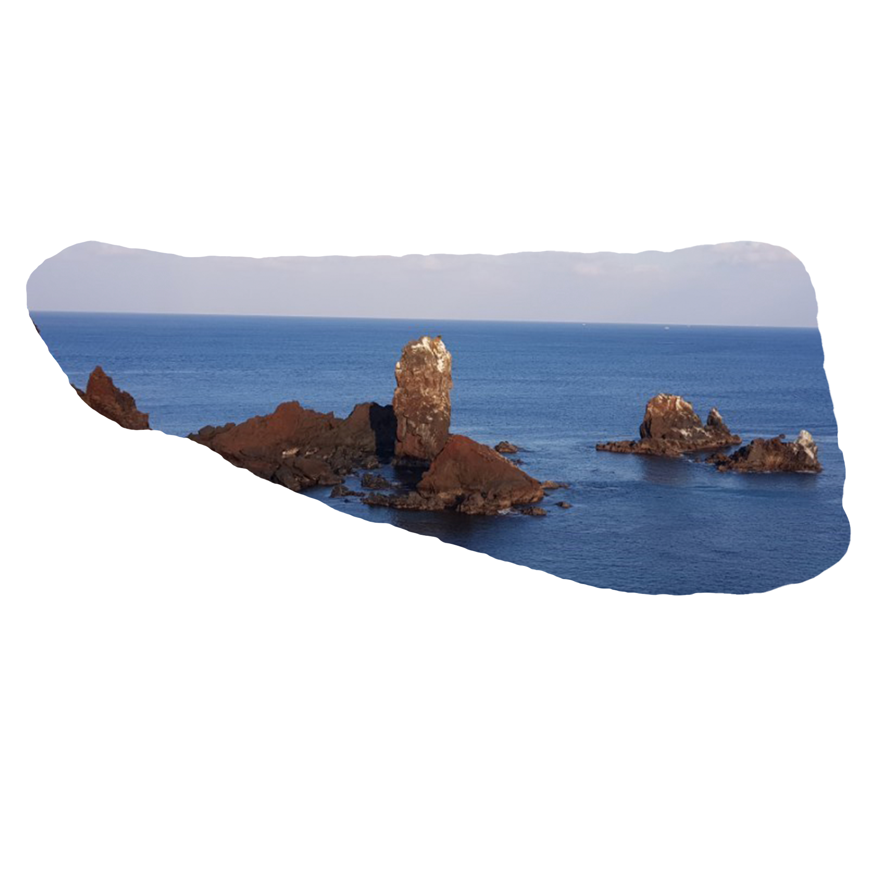

Muddle Crayon
Story
Store
선돌
Standing Stone

섭지코지의 슬픈 돌, ‘선돌바위’를 모티브로 했습니다.
섭지란 재사가 많이 배출되는 지세라는 뜻이며,
코지는 육지에서 바다로 톡 튀어나온 ‘곶’을 뜻하는 제주 방언입니다.
선돌바위 전설
사랑의 맹세
동해 용왕신의 막내 아들이 하늘에서
선녀가 내려오기만을 기다리다가
선채로 돌이 되어 버린 이야기입니다.
선돌 앞에서 사랑의 맹세를 하고
혼인을 하면 자녀를 얻을 수 있다는
선돌바위의 전설이 전해집니다.